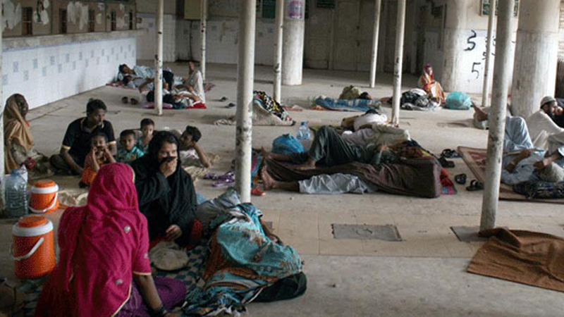

LACK OF HEALTH CARE
The most important aspect of well being is also the most neglected.
It is woeful that discussions around health policy receive little to no space in the agenda of political parties.

The result of this apathy is appealing health indicators.It is about time the government allocated more resources and paid more attention to health-related issues.Preferably before more people are left to die.